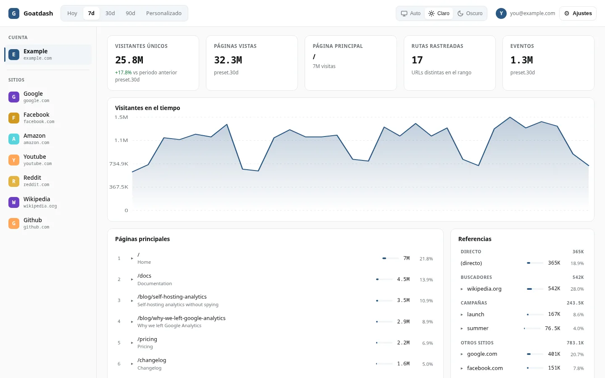
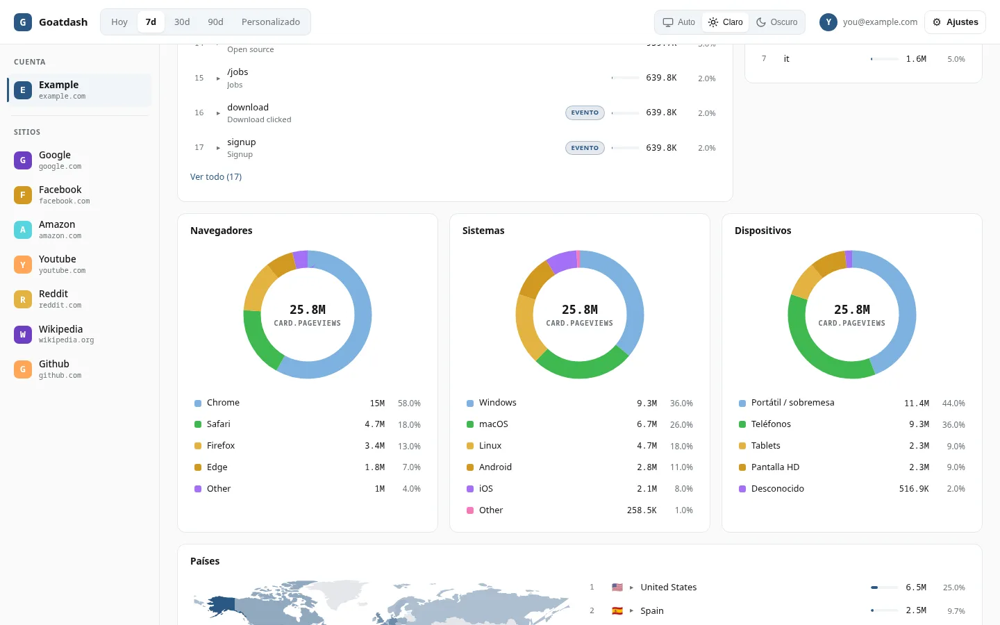

GoatCounter, el motor.
goatdash, la vista.
Un visor ligero y privado para tu analítica de GoatCounter. Sin cookies, sin nube, sin framework: unos ficheros estáticos que leen tu instancia directamente y la pintan con claridad.
Decisiones reales, no eslóganes.
GoatCounter por debajo
La API v0 y el header Host del binario oficial hacen todo el trabajo. No hay fork, no hay parche obligatorio, no hay segundo motor que mantener.
La vista, en tu navegador
Vanilla JS, sin framework, sin CDN, sin build y sin backend propio. Son siete ficheros estáticos: desplegar es copiar.
Tus datos, en tu casa
La API key vive en tu localStorage y solo viaja a tu instancia por HTTPS. Ningún servidor intermedio ve tus visitas.

GoatCounter es genial. Esta es su capa de consulta.
GoatCounter es un proyecto excelente: un solo binario, SQLite, sin tracking de datos personales y una API v0 que lo expone todo. Su interfaz oficial está pensada para administrar el sitio; goatdash es la otra cara: una interfaz de consulta, inofensiva, ligera y complementaria, que no toca una línea del motor.
Abrir la demoTodos tus sitios, en un solo panel.
La barra lateral lista la cuenta y sus subsitios desde /api/v0/sites. Cada sitio se consulta en su propio dominio con el binario oficial y, mientras lees, goatdash calienta en segundo plano la caché de los demás: cambiar de uno a otro es casi inmediato.
Ver el código
Todo lo que tu GoatCounter ya sabe, bien contado.
Cada función está contrastada contra el código del repositorio.
Dashboard multi-sitio
Barra lateral con la cuenta y sus subsitios desde /api/v0/sites. Cada sitio se consulta en su propio dominio, con el binario oficial.
Cambio de sitio instantáneo
Tras cargar el sitio activo, goatdash calienta en segundo plano la caché de los demás. Cambiar de sitio es casi inmediato.
Cinco tarjetas de KPI
Visitantes únicos con tendencia, páginas vistas, página principal, rutas rastreadas y eventos, en una rejilla sin huecos.
Referrers por canal
Directo, buscadores, campañas y otros sitios, con drill desde cada referrer hasta las páginas que trajo.
Recargas instantáneas
Un service worker diminuto sirve el shell desde el navegador y la API se cachea con stale-while-revalidate. Recargar pinta en milisegundos.
Respeto a la API
Caché de respuesta, cliente que lee X-Rate-Limit-Remaining y Retry-After, reintento por tarjeta e indicador de frescura.
Y además…
Drill en cada tarjeta
De páginas a referrers, de navegadores a versiones, de países a regiones, de campañas a sus URLs.
Mapa mundial
Países sombreados por visitas con escala de raíz cuadrada, tooltips y leyenda con degradado.
Rangos flexibles
Hoy, 7d, 30d, 90d o un rango personalizado con fecha de inicio y fin.
Tema tri-estado
Oscuro, claro o auto, aplicado antes de pintar por un theme.js externo compatible con un CSP estricto.
Español e inglés
UI en ES/EN/Auto, persistida en localStorage. Cambiar de idioma no pierde tu conexión.
Modo demo
Un clic carga el dashboard completo con datos de ejemplo realistas. Sin API key, ideal para probar antes de conectar.
Un vistazo a la interfaz.
GoatCounter, la herramienta. goatdash, la vista.
No compiten: se complementan. Matriz contrastada contra las fuentes públicas de GoatCounter y el repositorio de goatdash en agosto de 2026. La columna goatdash está resaltada.
| goatdash | GoatCounter (UI) | |
|---|---|---|
| La vista | ||
| Dashboard multi-sitio en una vista | ✓ | — |
| Recargas instantáneas desde el navegador | ✓ | ✗ |
| Drill-down por tarjeta | ✓ | ◐ |
| Mapa coroplético | ✓ | ✗ |
| Modo demo sin API key | ✓ | ✗ |
| Tema claro/oscuro/auto | ✓ | ✓ |
| Interfaz en ES/EN/Auto | ✓ | ✓ |
| La gestión | ||
| Administración del sitio y usuarios | ✗ | ✓ |
| API keys y exportación de datos | ✗ | ✓ |
| Campañas y filtros | ◐ | ✓ |
✓ nativo · ◐ parcial · ✗ no · — no aplica
El lado honesto
goatdash no es un reemplazo de GoatCounter y no pretende serlo. No administra sitios, no crea usuarios ni API keys, no exporta datos. Toda la gestión sigue viviendo en la interfaz oficial, que es donde debe estar. goatdash gana cuando lo único que quieres es mirar los números: rápido, claro y sin fricción.
Gratis. Para siempre.
Sin licencias, sin suscripciones, sin cuentas. Código abierto, AGPL-3.0 y gratuito siempre.
- Todo el dashboard
- Multi-sitio sin límites
- Sin cuentas ni seguimiento
- Código fuente AGPL-3.0
¿Te sobra? Dona si quieres. No es obligatorio.
Instalación fácil y rápida.
No hay script de instalación ni nada que compilar. goatdash son unos pocos ficheros estáticos: ponlos en cualquier host y abre la página.
git clone https://github.com/gnacho/goatdash.git && cd goatdash && python3 -m http.server 8000
Cualquier servidor web estático
Una instancia de GoatCounter con la API v0 accesible por HTTPS
Sin Docker, sin Node, sin herramientas de build
Para el multi-sitio, cada sitio necesita su propio dominio apuntando al mismo GoatCounter; el binario oficial resuelve el sitio por el header Host.
Lo que te estás preguntando.
¿Qué es goatdash?
Un dashboard de consulta para GoatCounter. Lee la API v0 de tu instancia y pinta tus estadísticas en una interfaz clara, ligera y sin dependencias.
¿Reemplaza a GoatCounter?
No. GoatCounter es el motor: recoge, almacena y expone los datos. goatdash es la vista de consulta. La administración del sitio sigue viviendo en la interfaz oficial.
¿Necesito un backend o una base de datos?
No. goatdash son ficheros estáticos que hablan directamente con tu instancia de GoatCounter desde el navegador.
¿Manda mis datos a algún sitio?
No. La API key vive en tu localStorage y las peticiones van a tu instancia por HTTPS. No hay servidor intermedio.
¿Funciona con varios sitios?
Sí. La barra lateral lista la cuenta y sus subsitios desde /api/v0/sites. Cada sitio vive en su propio dominio, todos apuntando al mismo GoatCounter, y el binario oficial resuelve el sitio por el header Host.
¿Cuánto cuesta?
Nada. Es AGPL-3.0, código abierto y gratuito siempre. Puedes donar a ko-fi si quieres apoyar el desarrollo.